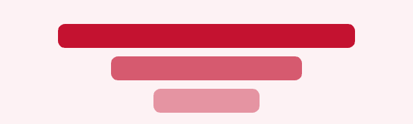
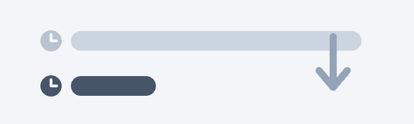
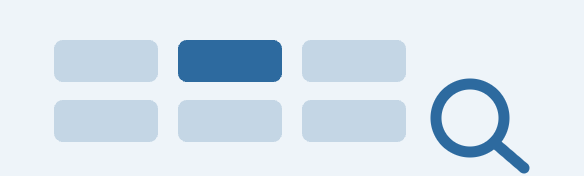
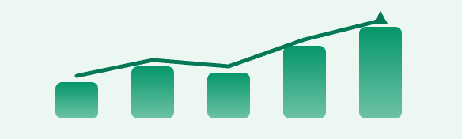

Research Development Office · Analytics Suite
Suite Map
Four coordinated components draw from shared data, converge in one operational and reporting core, and serve every decision-maker in RDO.
RDAS Ecosystem
Data Sources
The RDAS Core
Audiences
InfoReady
Competitions, nominees, scores
Sponsored Programs Office
Proposals, awards, follow-on
Symplectic Elements
Publications, citations, PI output
Financial Tracker
Authoritative spend by award
Foundation Directories
External funding opportunities
Research Development Analytics Suite
4 coordinated products · one core
The RDAS Core

RDO Limited Submissions Dashboard
Central intake and reporting for every LS competition, nominee, and outcome — operational and leadership views in one build.
CRUD
Pines Monthly
Selection Funnel

GitHub
Macro Automation Modernization
Reviewer scoring pipeline in Python — replaces the multi-hour VBA macro with reproducible output in minutes.
Rev Rating
Any Comp Type
10–25 min

Foundations Database
Discovery tool for foundation grant opportunities — filters by sponsor, deadline, eligibility, and early-investigator.
Faculty View
Auto-archive
Search

Grants Monetary Progress Tracker
Portfolio-wide view of internal award spend, ROI, publications, and follow-on external funding.
ROI
Burn Rate
PI Impact
VP for Research
(Eric)
Portfolio + ROI oversight
RDO Leadership
(Hana)
Program health + reporting
RDO Staff
(Kelly, Jay)
Ops, entry, imports
Deans + Faculty
(Jill, PIs)
Opportunity discovery
Principle
Leadership reporting becomes a byproduct of workflow, not a separate manual process.
3–5 hrs
Saved per reviewer cycle
5 systems
Unified
4 audiences
Role-scoped views
Data flow: left to right. Shared sources feed the RDAS Core. The Core routes coordinated products to each RDO audience.
Research Development Office · University of Maryland